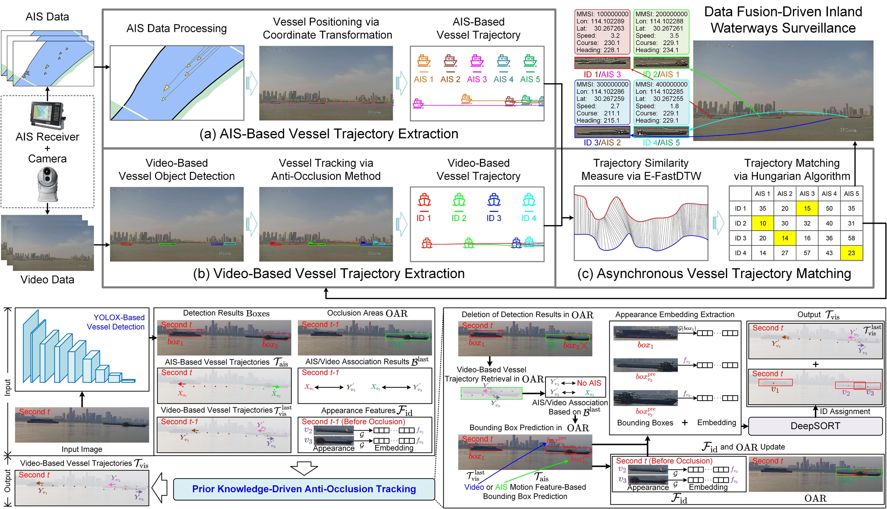
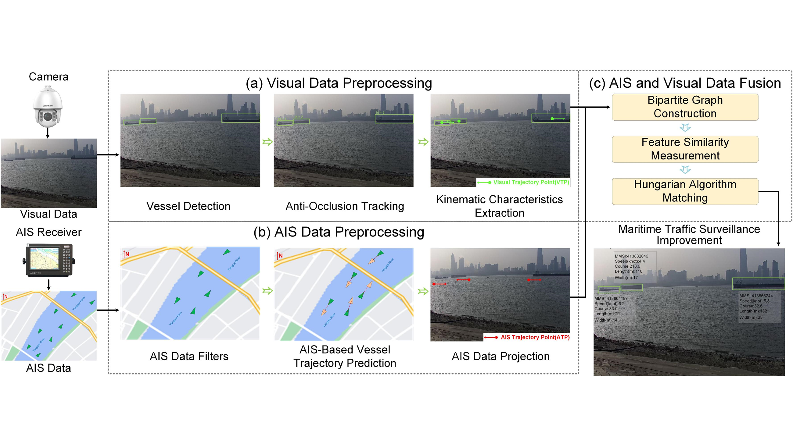
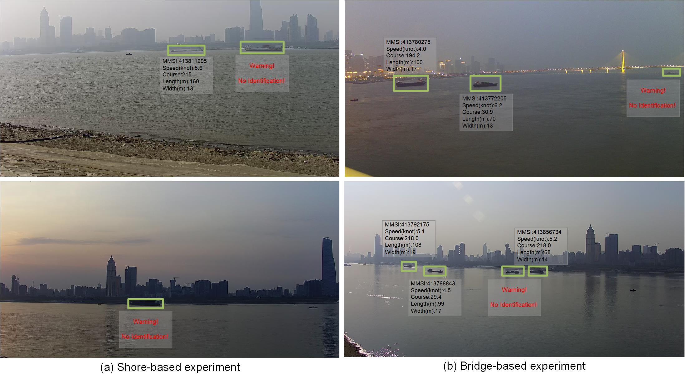
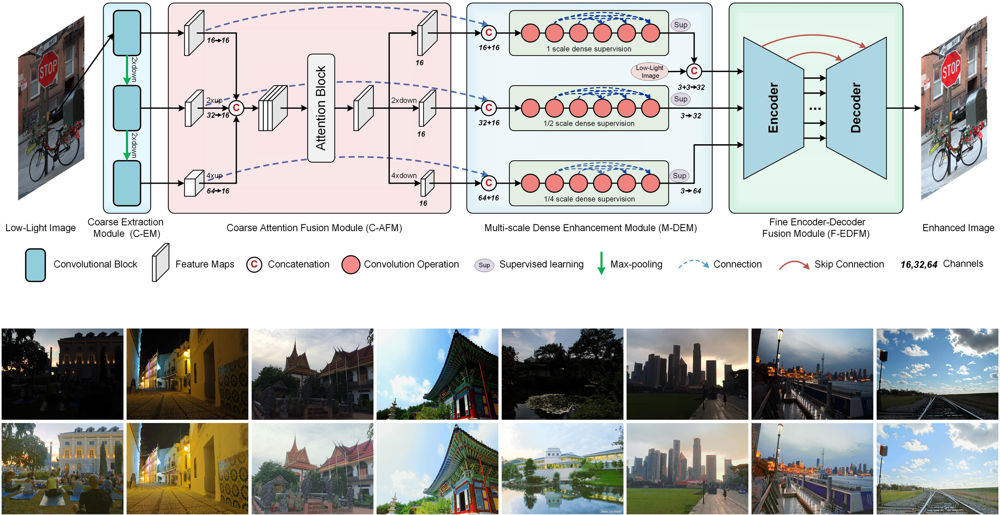
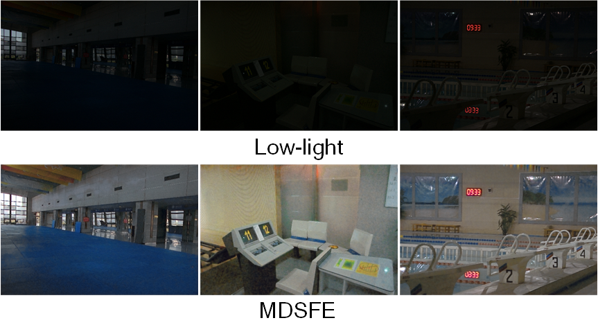
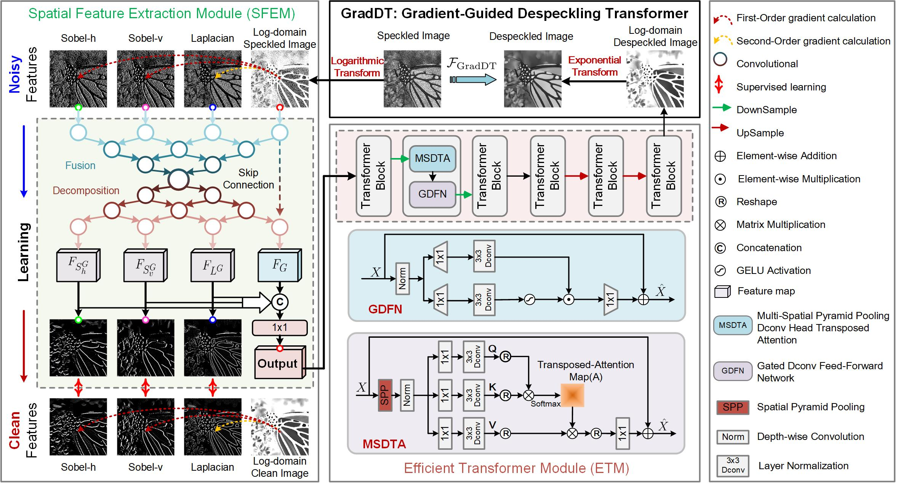
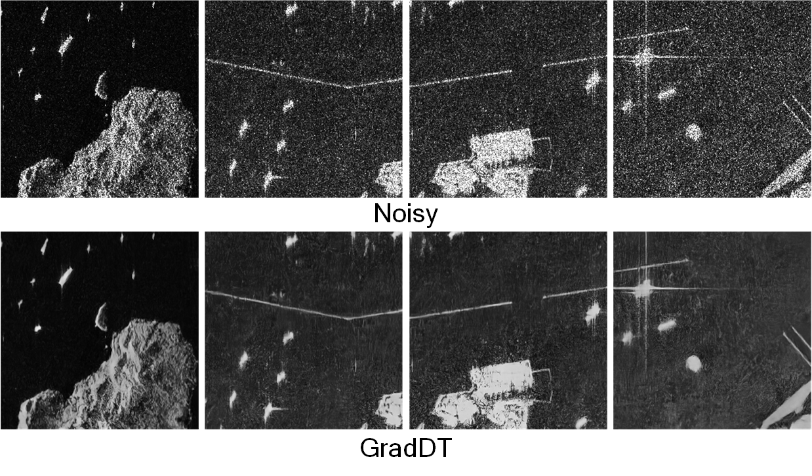
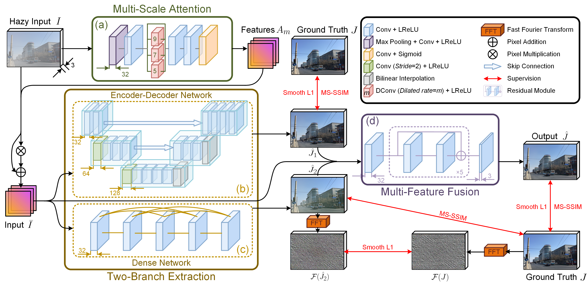
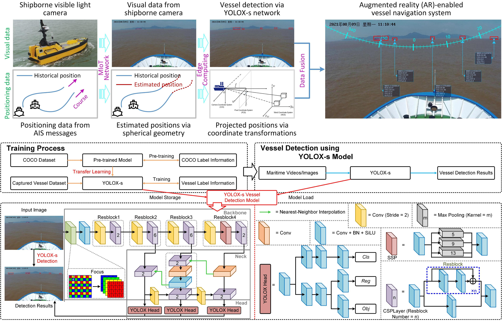
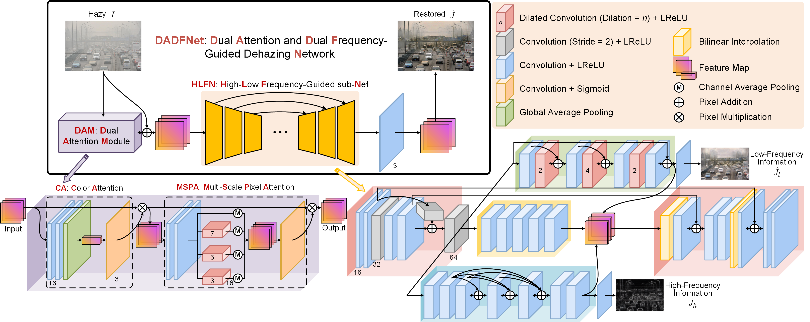

|
Google Scholar / Github / ResearchGate Email: yuguo@whut.edu.cn Yu Guo received the B.Sc. degree in naval architecture and marine engineering from the School of Transportation, Wuhan University of Technology, Wuhan, China, in 2021. He is currently pursuing the Ph.D. degree in traffic information engineering and control with the School of Navigation, Wuhan University of Technology, Wuhan, China, under the supervision of Prof. Ryan Wen Liu. His research interests include computer vision, machine learning, and intelligent navigation systems. |

|
|
 
|
Yu Guo, Ryan Wen Liu, Jingxiang Qu, Yuxu Lu, Fenghua Zhu, Yisheng Lv PDF | Code | Dataset | Bibtex |
|
Yu Guo, Yuan Gao, Ryan Wen Liu#, Yuxu Lu, Jingxiang Qu, Shengfeng He, Wenqi Ren PDF | Code | BibTex |
  |
Jingxiang Qu, Ryan Wen Liu#, Yu Guo, Yuxu Lu, Jianlong Su, Peizheng Li PDF | Code | BibTex |
Yu Guo*, Yuxu Lu*, Ryan Wen Liu#, Fenghua Zhu PDF | Code | BibTex |
  |
Yu Guo*, Yuxu Lu*, Jingxiang Qu, Ryan Wen Liu#, Wenqi Ren PDF | BibTex |
  |
Yuxu Lu*, Yu Guo*, Ryan Wen Liu#, Kwok Tai Chui, Brij B Gupta PDF | Code | BibTex |
 
|
Ryan Wen Liu, Yu Guo, Yuxu Lu, Kwok Tai Chui#, Brij B Gupta# PDF | Code | BibTex |
Yuxu Lu*, Yu Guo*, Ryan Wen Liu#, Wenqi Ren PDF | Code | BibTex |
 
|
Ryan Wen Liu, Yu Guo, Jiangtian Nie#, Qin Hu, Zehui Xiong, Han Yu, Mohsen Guizani PDF | BibTex |
 
|
Yu Guo, Ryan Wen Liu, Jiangtian Nie, Lingjuan Lyu, Zehui Xiong, Jiawen Kang, Han Yu, Dusit Niyato PDF | Code | BibTex (Best Paper Award) |
Yu Guo*, Yuxu Lu*, Ryan Wen Liu# PDF | Code | BibTex (ESI Highly Cited Paper) |
|
© Yu Guo | Last updated: May 2023